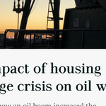

Introduction
In 2013, nationwide, the total number of people experiencing homelessness was on the decline, with most states experiencing decreases in the amount of homelessness. Most of the exceptions are clustered in the northeastern and north-central parts of the United States, but even in these regions, the increases were for the most part relatively modest.
However, in North Dakota, the number of people experiencing homelessness exploded, tripling in only a year's time. Such a sudden and severe increase posed unprecedented challenges in a place where no existing shelters or established local relief programs were available to support those experiencing homelessness at such a scale.
{kind=link}
Count of Homeless Population
In 2013, unhoused populations were concentrated primarily in states with large urban areas, such as California, New York, and Florida. The rural and less densely populated central and western states, including North Dakota, had comparably fewer people experiencing homelessness in terms of count alone.
While this map suggests North Dakota does not have a high number of people experiencing homelessness compared to other states, it does not provide the full picture of the challenges the state is seeking to address at a more local level.
{kind=link}
Percentage Experiencing Homelessness
When the number of people experiencing homelessness counts are normalized by dividing that value by the total population, a different pattern is revealed.
While states like California and New York still have the highest proportion of people experiencing homelessness, several states in the Midwest are also showing relatively high proportion of people experiencing homelessness. Among these states, North Dakota stands out as having a particularly high percentage of people experiencing homelessness. This is largely due to the increase of workers who have flocked to the state in search of well-paying energy industry jobs.
The state was unprepared for the new arrivals and was unable to accommodate the housing needs, resulting in a housing shortage and high cost of living. The increased percentage of an unhoused population may strain a state's ability support such individuals with its own limited resources, potentially necessitating external assistance such as federal funding support.
{kind=link}
Percent Change in Unhoused Population, 2012–2013
Between 2012 to 2013, new discoveries in shale oil and advances in drilling techniques created an economic boom in North Dakota. Workers from across the continent flocked to the rural prairie state in search of plentiful and well-paying jobs. Although the state was able to boast having the high economic index across the board, including the lowest unemployment rate in the country, the boom has put a strain on North Dakota's infrastructure. As some cities nearly doubled their populations, housing was unable to keep pace with the growth. Employed individuals were experiencing homelessness, working by day and taking shelter in temporary, unsustainable housing situations like cars and tents by night.
{kind=link}
StoryMap
Click here to view the StoryMap on ArcGIS.com (login required).